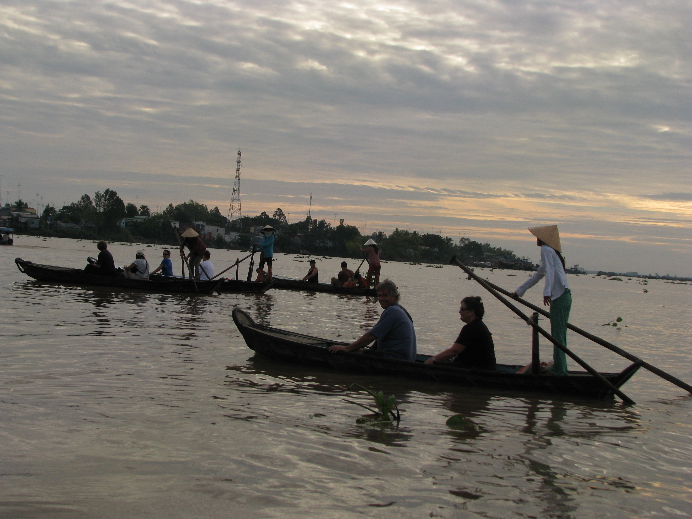
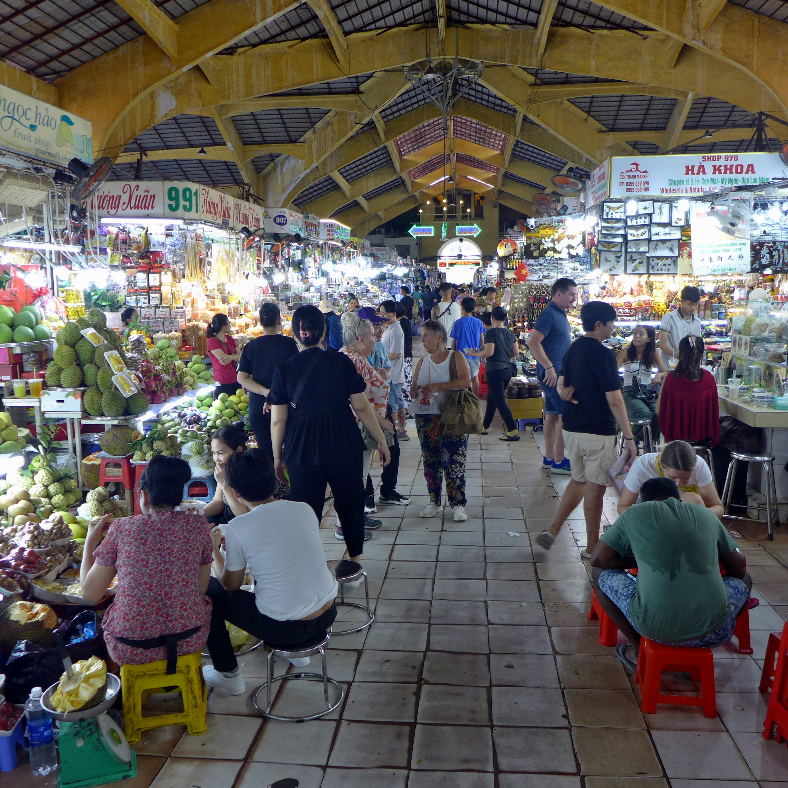
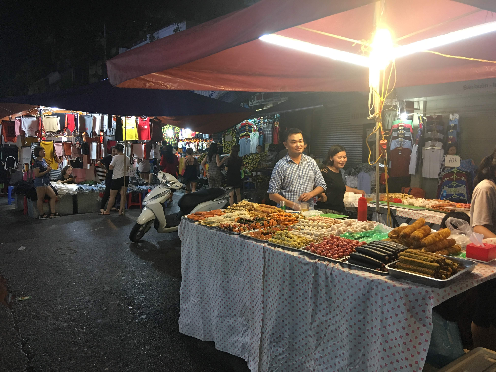

Why Do I Love Ho Chi Minh City?
Ho Chi Minh City aka Saigon is one of the most exciting and exotic cities I have visited. As a traveler I know the feeling, sometimes a city just speaks to you. And being my first international travel destination Saigon will always have a special place in my heart. From the 75 cent Banh Mi Street carts to the beautiful temple complexes, I can't get enough of Saigon.

Mekong River Tour by WikiMedia
Experience the dense and peaceful canals which snake through the Mekong River delta. The unique and exotic foliage paired with other worldly wildlife promises a memorable experience. Exploring the canals in a traditional rowboat ties you to the rich cultural past. .

Ben Thanh Market by WikiMedia
This iconic market is a must-visit for purchasing local food, clothing, shoes, and souvenirs. Ben Thanh is the heart of Saigon shopping, alive with energy from morning to night. My favorite part of shopping at Ben Thanh was negotiating with the stubborn store owners. I love making a good deal and not knowing the price it makes for a fun experience.

Tailor Store by WikiMedia
Saigon is the best place in the world to get a custom-made outfit in just a few days. Choose your fabric from hundreds of choices, get measured, and let the skilled craftsman work. In just a few days you have a cheap and high-quality handcrafted piece you can wear for a lifetime.

Night Market by WikiMedia
Once the sun goes down, the streets light up with vendors, preformers, music, and cheap tasty food.
Visiting a night market is one of the best ways to experience local life and street culture.
Interesting Facts About the City
- Population: Over 9 million people
- The Climate is Tropical and humid all year
- The original name, Saigon was changed by communist leader Ho Chi Minh to declare victory.
- Located along the lifeblood of south east asia, the Mekong River delta